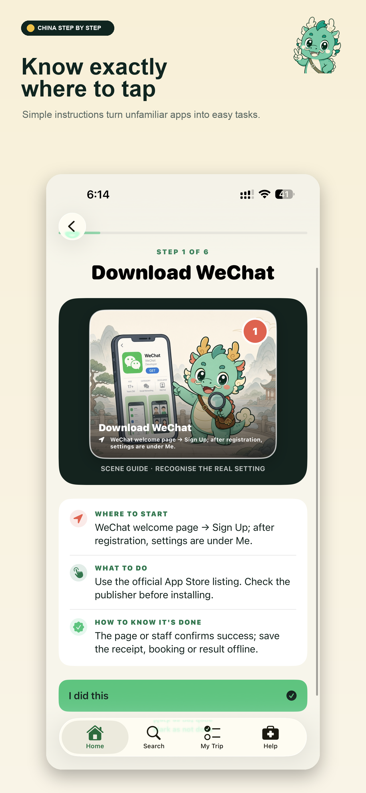

Arrive ready
Know what to download, set up and save before your flight.
One beautifully simple travel companion for the apps, payments, trains, language and everyday moments that make China feel easy.
TRAVEL WITH A PLAN, NOT A QUESTION MARK
China is unforgettable. The logistics can feel unfamiliar. We turn every essential task into one clear next step—so you spend less time figuring things out and more time being there.
Know what to download, set up and save before your flight.
Follow visual, tap-by-tap guides for payments, transport and daily essentials.
Keep phrases, emergency cards, trip details and practical tools close at hand.
YOUR LOCAL KNOW-HOW, IN YOUR POCKET
Clear guidance meets practical travel tools in one calm, private, offline-ready app.



ONE COUNTRY. ENDLESS MOMENTS.
Ancient paths, impossible peaks and electric skylines—China rewards the curious. We help you arrive ready for all of it.
Travel photography: Jamie Street, Yun and The SheStarters Guide / Unsplash.
Land with the confidence
of someone who's been
there before.
Clear steps. Useful tools. More room for wonder.
YOUR CHINA STORY STARTS HERE
Download your guide before you fly. Your next step is already waiting.
●Available nowDownload on the App Store↗Available for iPhone and iPad · English & Chinese · Offline access